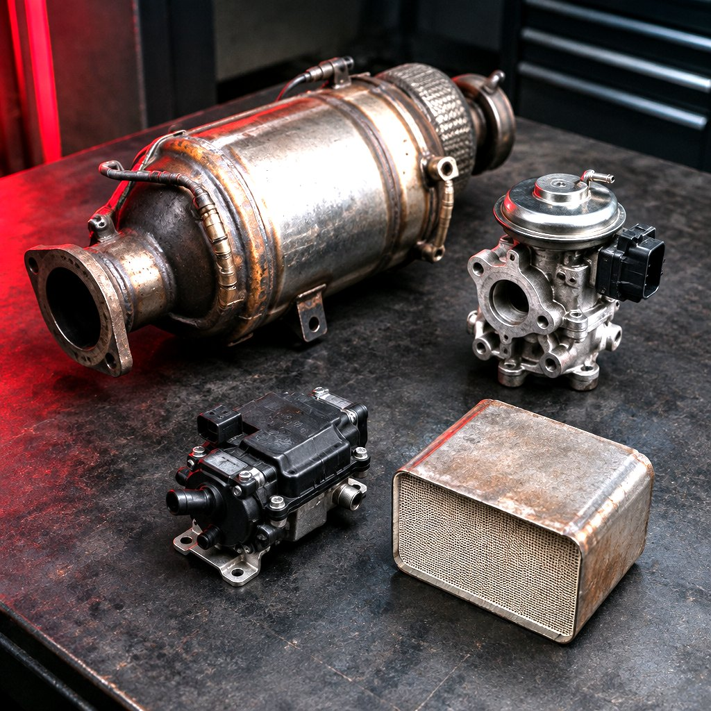

AdBlue, SCR, EGR, DPF, FLAP
Удаляем экологические системы программно и физически: мочевина, SCR, EGR, сажевый фильтр, вихревые заслонки, катализатор, старт-стоп. Сначала объясняем последствия, потом делаем.
Что нужно удалить именно вам
Отметьте пункты: соберём список работ и подготовим сообщение мастеру. Часть пунктов делается только в паре с другими.
Выбранные работы
Отметьте пункты — соберём список и откроем WhatsApp с готовым сообщением.
Пока ничего не выбрано
Отправить мастеруЧто делает каждая система
Чтобы решение было осознанным: за что отвечает узел и что меняется после его отключения.
AdBlue и SCR
Впрыск мочевины в выпуск для снижения оксидов азота. После удаления не нужно заливать AdBlue, но меняются экологические показатели.
EGR
Возвращает часть выхлопа во впуск. Забивается сажей, из-за чего падает тяга и появляются ошибки.
DPF
Сажевый фильтр задерживает сажу. При коротких поездках не прожигается и забивается — машина уходит в аварийный режим.
FLAP
Вихревые заслонки во впускном коллекторе. Со временем заклинивают, ломаются и попадают в цилиндры.
Катализатор
Нейтрализует выхлоп бензинового мотора. Разрушенный катализатор душит двигатель — удаляем и отключаем контроль.
Старт-стоп
Глушит двигатель на остановках. Отключаем, если поведение раздражает или влияет на ресурс стартера.
Программно или физически
Программная часть снимает ошибки и логику контроля. Физическая — убирает саму деталь, если она уже мешает.
Только программа
Отключаем контроль и ошибки, деталь остаётся на месте. Подходит, когда железо исправно, но мешает логика.
Программа + демонтаж
Убираем забитый DPF, заклинившие заслонки, разрушенный катализатор и ставим вместо них решение по конфигу.
С проверкой до работ
Сначала диагностика: иногда достаточно почистить узел, а не удалять. Скажем, если так дешевле и правильнее.
Что важно понимать
Мы не прячем последствия: это вмешательство в экологические характеристики автомобиля.
Ответственность владельца
Удаление AdBlue, SCR, EGR, DPF и катализатора меняет экологический класс автомобиля. Решение принимает владелец, он же отвечает за соответствие требованиям при эксплуатации, техосмотре и продаже. Мы объясняем последствия до начала работ.
Технические последствия
После удаления сажевого фильтра меняется звук выпуска и запах, а на некоторых двигателях требуется пламегаситель и корректировка наддува. Всё это обсуждаем и включаем в работу заранее.
Про экологию
Вопросы, которые задают чаще всего.
Не всегда: если фильтр целый и дело в датчиках или логике, достаточно программы. Физически убираем, когда он забит или разрушен.
Нет, мы полностью убираем ошибки в ЭБУ двигателя, связанные с удалёнными системами.
Обычно расход немного снижается на дизеле, потому что мотор перестаёт работать в режиме прожига.
Программно — в течение дня. С демонтажом узлов — дольше, зависит от конструкции автомобиля.
Да, если блок управления поддерживает работу. Уточните модель и год — ответим по конкретной машине.
Собрали список? Обсудим
Позвоните или пришлите список в WhatsApp: скажем, что нужно и сколько займёт.